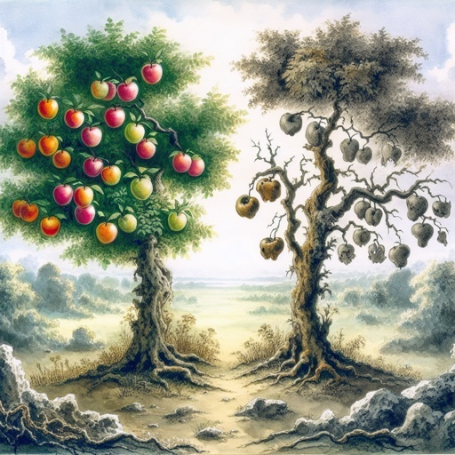
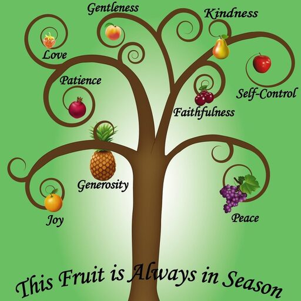

A Tree Is Known By Its Fruit
Either make the tree good, and his fruit good; or else make the tree corrupt, and his fruit corrupt: for the tree is known by his fruit.
O generation of vipers, how can ye, being evil, speak good things? for out of the abundance of the heart the mouth speaketh.
A good man out of the good treasure of the heart bringeth forth good things: and an evil man out of the evil treasure bringeth forth evil things.
But I say unto you, That every idle word that men shall speak, they shall give account thereof in the day of judgment.
For by thy words thou shalt be justified, and by thy words thou shalt be condemned.
Matthew 12:33-37
- 
- 